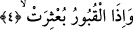
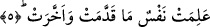

4. Kabirlerin içindekiler dışarı çıkarıldığı zaman,
Yani toprağı altüst edilip içindeki ölüler dışarı çıkarıldığı zaman. Âyette geçen
“bu’sira” fiiline, görüldüğü üzere “toprağın altüst edilmesi ve ölünün çıkarılması”
mânâsını verdik. Oysa ilerde gelecek olan “el-Âdiyât” sûresinde aynı kelimeye
“kabirdekilerin diriltilmesi ve dışarı çıkarılması” anlamını vereceğiz. Bu iki anlam
birbirine aykırı değildir. Çünkü bu fiilin kökü aynı zamanda karıştırmak ve açığa
çıkarmak anlamına da gelir.
O zaman kabirler altüst edilir. Yani toprakları karıştırırlar, toprakta medfun olan ölü
bedenler ve hazineler ortaya çıkar, ölüler de diriltilir.
“Bu’sira” fiilinin bir benzeri hem lafız ve hem de mânâ itibariyle “buhsira” fiilidir.
Her ikisinin anlamı da herhangi bir şeyi altüst etmek demektir.
Kabirlerin altüst edilmesi, içerisindeki ölülerin dışarıya çıkarılmasıyla olur. İşte
ölülerin dışarıya çıkarılması mânâsını buradan anlıyoruz. Kelimenin yapısındaki bu
“dışarıya çıkarma” anlamından dolayı “Berae” sûresine “el-Muba’sira” sûresi
denmiştir. Surenin bu ismi alması, münafıkların iç yüzlerini dışarıya vurmasından
dolayıdır. “Bu’sira” ve “buhsira” fiillerinin birincisi “ba’s”tan ikincisi ise “bahs”tan
türemiştir. Bu kökün ortasında bir de “ra” harfi vardır.
Rağıb’ın ifâdesine göre; “hellele” ve “besmele” gibi dört veya beş harfli fiillerin iki
fiilden meydana gelmiş fiil olduğunu belirten âlimler, “bu’sira” fiilinin “ba’ase+usira”
fiillerinden meydana geldiğini söylemişlerdir. Buna göre; “ba’ase” “toprağını altüst
etti” demektir; “usira” ise “içindekini harekete geçirdi” anlamına gelir. Bu açıklama bu
noktada uzak bir ihtimal olarak görülmüyor. Çünkü “ba’sera” kökü “ba’ase” ve “usira”
mânâlarını içermektedir.
Yeryüzünde denizlerin birbiriyle birleşmesi ve kabirlerin altüst edilmesi de aynı
şekilde yeryüzü ile ilgili kıyamet alâmetlerindendir. Çünkü Allah Teâlâ göğü tahrip edip
yıldızları darmadağın ettikten sonra yeryüzünde bulunan her şeyi, denizleri birbirine
karıştırmak sûretiyle tahrip edecektir. Sonra da bizzat yeryüzünün kendisini tıpkı bir
bina gibi tahrip edecektir. Yani altını üstüne ve üstünü de altına getirecektir.
Bu âyette taayyunat kabirlerinin harap edileceğine müteayyin olan kimsenin
(kendisinde benlik gören kimsenin) mutlak olarak taayyunatından sıyrılacağına işâret
vardır. Çünkü taayyunat mutlak hakikatlerin kabirleridir ve yine bu âyette beden
kabirlerine ve bunların ölüm vâsıtasıyla içlerinde bulunan ruhları ve kuvvetleri dışarıya
çıkaracaklarına işâret vardır.